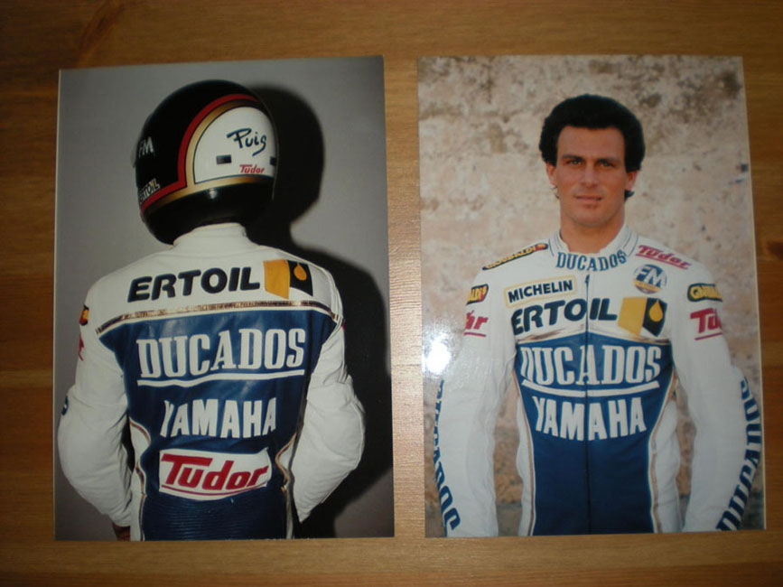
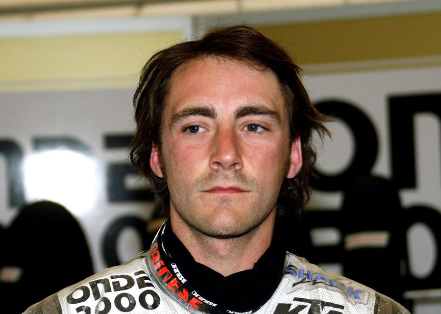
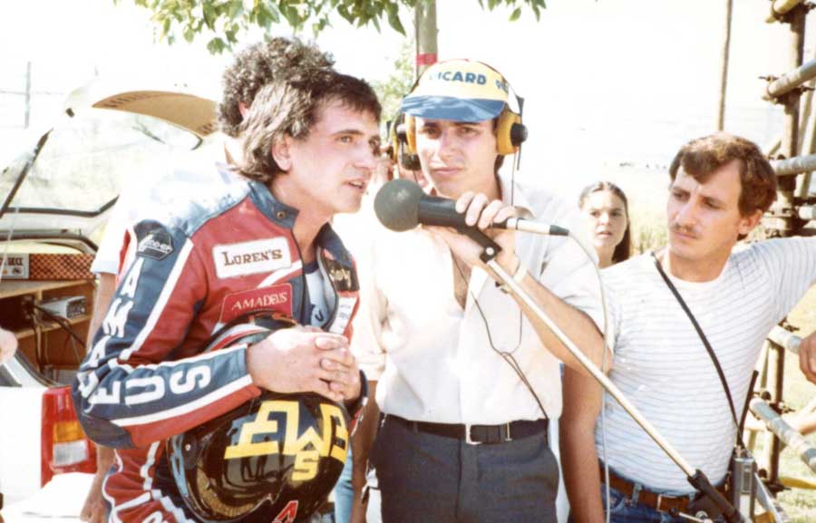
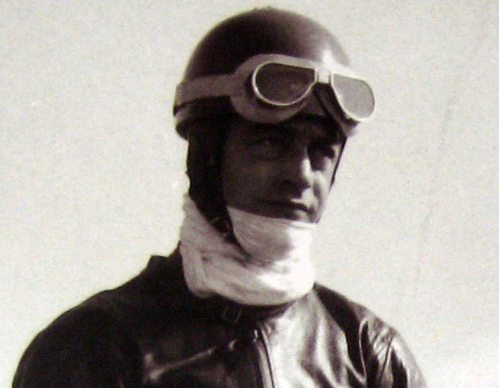
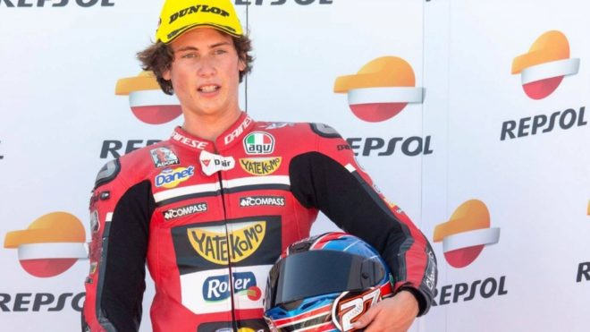
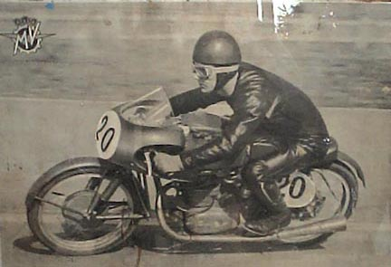
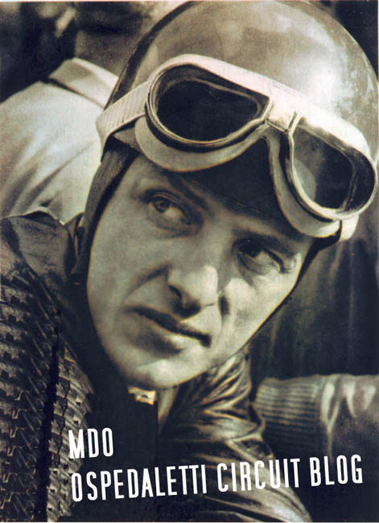
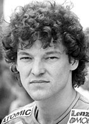
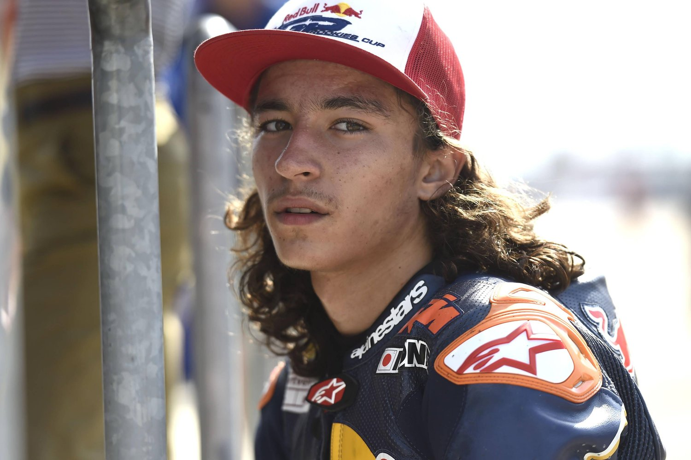
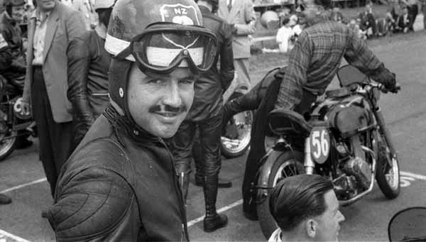

Campeonato del Mundo de Motociclismo
En esta lista encontrarás todos los podios totales* y victorias* desde 1949 hasta hoy, de las categorías de 50cc, 80cc, 125cc, 250cc, 350cc, 500cc, Moto2, Moto3 y Motogp. *Podios totales es igual a los triunfos conseguidos en los tres escalones. *Victorias es igual a los triunfos conseguidos en el primer escalón. Entre paréntesis, número de victorias. Actualizado el día 06-nov.-22. Última carrera España – Valencia - Cheste
| Pos | Piloto | Imagen | País | Victorias | Podios Totales | Motogp | Moto2 | Moto3 | 250cc | 125cc | 350cc | 80cc | 50cc | Campeonatos Mundiales |
| 301 | Domenico BRIGAGLIA | ITA | 1 | 9 | 9 (1) | |||||||||
| 302 | Alberto PUIG |  | SPA | 1 | 9 | 5 (1) | 4 | |||||||
| 303 | Victor PALOMO |  |
SPA | 1 | 8 | 2 | 6 (1) | |||||||
| 304 | Gyula MARSOVSZKY | SWI | 1 | 8 | 5 | 3 (1) | ||||||||
| 305 | Jack AHEARN | AUS | 1 | 8 | 7 (1) | 1 | ||||||||
| 306 | Derek MINTER | GBR | 1 | 8 | 6 | 2 (1) | ||||||||
| 307 | John WILLIAMS | GBR | 1 | 8 | 3 (1) | 3 | 2 | |||||||
| 308 | Stefan PREIN | GER | 1 | 8 | 8 (1) | |||||||||
| 309 | Pablo NIETO |  | SPA | 1 | 8 | 8 (1) | ||||||||
| 310 | Bert SCHNEIDER | AUT | 1 | 8 | 2 | 1 | 5 (1) | |||||||
| Pos | Piloto | Imagen | País | Victorias | Podios Totales | Motogp | Moto2 | Moto3 | 250cc | 125cc | 350cc | 80cc | 50cc | Campeonatos Mundiales |
| 311 | Chris VERMEULEN | AUS | 1 | 7 | 7 (1) | |||||||||
| 312 | Ian McCONNACHIE |  |
GBR | 1 | 7 | 7 (1) | ||||||||
| 313 | Dominique AEGERTER |  |
SWI | 1 | 7 | 7 (1) | ||||||||
| 314 | Nobuatsu AOKI | JPN | 1 | 7 | 4 | 3 (1) | ||||||||
| 315 | Hermann Paul MÜLLER |  |
GER | 1 | 7 | 6 (1) | 1 | 1 (1955 - 250CC) |
||||||
| 316 | Olivier CHEVALLIER | FRA | 1 | 7 | 2 | 5 (1) | ||||||||
| 317 | Romolo FERRI |  |
ITA | 1 | 7 | 1 | 6 (1) | |||||||
| 318 | Jeremy McWILLIAMS | GBR | 1 | 6 | 6 (1) | |||||||||
| 319 | Isao MORISHITA | JPN | 1 | 6 | 6 (1) | |||||||||
| 320 | Andrea Migno |  |
ITA | 1 | 6 | 6 (1) | ||||||||
| Pos | Piloto | Imagen | País | Victorias | Podios Totales | Motogp | Moto2 | Moto3 | 250cc | 125cc | 350cc | 80cc | 50cc | Campeonatos Mundiales |
| 321 | Kim NEWCOMBE | NZE | 1 | 6 | 6 (1) | |||||||||
| 322 | Ben SPIES | USA | 1 | 6 | 6 (1) | |||||||||
| 323 | Darryn BINDER |  |
RSA | 1 | 6 | 6 (1) | ||||||||
| 324 | Marcellino LUCCHI | ITA | 1 | 5 | 5 (1) | |||||||||
| 325 | Alan NORTH | RSA | 1 | 5 | 3 | 2 (1) | ||||||||
| 326 | Jacques BOLLE | FRA | 1 | 5 | 1 (1) | 4 | ||||||||
| 327 | Jean Claude SELINI | FRA | 1 | 5 | 5 (1) | |||||||||
| 328 | Troy BAYLISS | AUS | 1 | 5 | 5 (1) | |||||||||
| 329 | Fausto RICCI | ITA | 1 | 5 | 5 (1) | |||||||||
| 330 | Artie BELL | IRL | 1 | 5 | 2 | 3 (1) | ||||||||
| Pos | Piloto | Imagen | País | Victorias | Podios Totales | Motogp | Moto2 | Moto3 | 250cc | 125cc | 350cc | 80cc | 50cc | Campeonatos Mundiales |
| 331 | Paolo CASOLI | ITA | 1 | 5 | 5 (1) | |||||||||
| 332 | Cees VAN DONGEN |  |
NED | 1 | 5 | 5 (1) | ||||||||
| 333 | Marcel SCHROTTER |  |
GER | 1 | 5 | 5 (1) | ||||||||
| 334 | Benedicto CALDARELLA | ARG | 1 | 4 | 3 (1) | 1 | ||||||||
| 335 | Bruno SPAGGIARI | ITA | 1 | 4 | 1 | 3 (1) | ||||||||
| 336 | Boet VAN DULMEN | NED | 1 | 4 | 4 (1) | |||||||||
| 337 | Herve GUILLEUX | FRA | 1 | 4 | 4 (1) | |||||||||
| 338 | Xavier SIMEON |  |
BEL | 1 | 4 | 4 (1) | ||||||||
| 339 | Gerhard THUROW | GER | 1 | 4 | 4 (1) | |||||||||
| 340 | Fumio ITO |  |
JPN | 1 | 4 | 4 (1) | ||||||||
| Pos | Piloto | Imagen | País | Victorias | Podios Totales | Motogp | Moto2 | Moto3 | 250cc | 125cc | 350cc | 80cc | 50cc | Campeonatos Mundiales |
| 341 | Kenjiro TANAKA | JPN | 1 | 4 | 2 | 2 (1) | ||||||||
| 342 | Pier Luigi CONFORTI | ITA | 1 | 4 | 1 | 3 (1) | ||||||||
| 343 | Kaito TOBA |  |
JPN | 1 | 4 | 4 (1) | ||||||||
| 344 | Somkiat CHANTRA |  |
THA | 1 | 4 | 4 (1) | ||||||||
| 345 | Jorge KISSLING | ARG | 1 | 3 | 2 (1) | 1 | ||||||||
| 346 | Simon CRAFAR |  |
NZE | 1 | 3 | 3 (1) | ||||||||
| 347 | Benjamin GRAU |  | SPA | 1 | 3 | 1 | 1 (1) | 1 | ||||||
| 348 | Michel FRUTSCHI | SWI | 1 | 3 | 1 (1) | 2 | ||||||||
| 349 | Adu CELSO-SANTOS |  |
BRA | 1 | 3 | 1 | 2 (1) | |||||||
| 350 | Jan BRUINS | NED | 1 | 3 | 3 (1) | |||||||||
| Pos | Piloto | Imagen | País | Victorias | Podios Totales | Motogp | Moto2 | Moto3 | 250cc | 125cc | 350cc | 80cc | 50cc | Campeonatos Mundiales |
| 351 | Philipp OETTL | GER | 1 | 3 | 3 (1) | |||||||||
| 352 | Duilio AGOSTINI |  | ITA | 1 | 3 | 3 (1) | ||||||||
| 353 | Jordi TORRES |  |
SPA | 1 | 3 | 3 (1) | ||||||||
| 354 | Horst FÜGNER |  |
GER | 1 | 3 | 3 (1) | ||||||||
| 355 | Kevin MAGEE | AUS | 1 | 3 | 3 (1) | |||||||||
| 356 | Jules CLUZEL | FRA | 1 | 3 | 2 (1) | 1 | ||||||||
| 357 | Joe ROBERTS |  | USA | 1 | 3 | 3 (1) | ||||||||
| 358 | Tony JEFFERIES | GBR | 1 | 2 | 2 (1) | |||||||||
| 359 | Livio LOI |  |
BEL | 1 | 2 | 2 (1) | ||||||||
| 360 | Angelo COPETA |  | ITA | 1 | 2 | 2 (1) | ||||||||
| Pos | Piloto | Imagen | País | Victorias | Podios Totales | Motogp | Moto2 | Moto3 | 250cc | 125cc | 350cc | 80cc | 50cc | Campeonatos Mundiales |
| 361 | Ray McCULLOUGH | IRL | 1 | 2 | 2 (1) | |||||||||
| 362 | Ivan GOI |  |
ITA | 1 | 2 | 2 (1) | ||||||||
| 363 | Ingo EMMERICH | GER | 1 | 2 | 2 (1) | |||||||||
| 364 | Horoshi HASEGAWA |  |
JPN | 1 | 2 | 2 (1) | ||||||||
| 365 | Jim FILICE | USA | 1 | 2 | 2 (1) | |||||||||
| 366 | R. CREITH | IRL | 1 | 2 | 2 (1) | |||||||||
| 367 | Godfrey NASH | GBR | 1 | 2 | 2 (1) | |||||||||
| 368 | Giuseppe COLNAGO |  | ITA | 1 | 2 | 1 (1) | 1 | |||||||
| 369 | John NEWBOLD | GBR | 1 | 2 | 2 (1) | |||||||||
| 370 | Shoya TOMIZAWA | JPN | 1 | 2 | 2 (1) | |||||||||
| Pos | Piloto | Imagen | País | Victorias | Podios Totales | Motogp | Moto2 | Moto3 | 250cc | 125cc | 350cc | 80cc | 50cc | Campeonatos Mundiales |
| 371 | Gerd KAFKA |  | AUT | 1 | 2 | 2 (1) | ||||||||
| 372 | Leif GUSTAFSSON | SWE | 1 | 2 | 2 (1) | |||||||||
| 373 | Michele PIRRO |  |
ITA | 1 | 2 | 2 (1) | ||||||||
| 374 | Tetsuta NAGASHIMA | JPN | 1 | 2 | 2 (1) | |||||||||
| 375 | Regis LACONI | FRA | 1 | 2 | 2 (1) | |||||||||
| 376 | Karel ABRAHAM | CZE | 1 | 2 | 2 (1) | |||||||||
| 377 | Masaru KOBAYASHI | JPN | 1 | 2 | 2 (1) | |||||||||
| 378 | Tadahiko TAIRA | JPN | 1 | 2 | 1 | 1 (1) | ||||||||
| 379 | Xavier ARTIGAS |  |
SPA | 1 | 2 | 2 (1) | ||||||||
| 380 | Guido LEONI | ITA | 1 | 1 | 1 (1) | |||||||||
| Pos | Piloto | Imagen | País | Victorias | Podios Totales | Motogp | Moto2 | Moto3 | 250cc | 125cc | 350cc | 80cc | 50cc | Campeonatos Mundiales |
| 381 | Jean AUREAL | FRA | 1 | 1 | 1 (1) | |||||||||
| 382 | Alan CARTER | GBR | 1 | 1 | 1 (1) | |||||||||
| 383 | Can ONCU |  | TUR | 1 | 1 | 1 (1) | ||||||||
| 384 | Louis ROSSI |  |
FRA | 1 | 1 | 1 (1) | ||||||||
| 385 | Osamu MIYAZAKI | JPN | 1 | 1 | 1 (1) | |||||||||
| 386 | Fritz REITMAIER | GER | 1 | 1 | 1 (1) | |||||||||
| 387 | Guido SALA | ITA | 1 | 1 | 1 (1) | |||||||||
| 388 | Ken MUDFORD |  | NZE | 1 | 1 | 1 (1) | ||||||||
| 389 | Dennis IRELAND | NZE | 1 | 1 | 1 (1) | |||||||||
| 390 | Edi STOELLINGER | AUT | 1 | 1 | 1 (1) | |||||||||
| Pos | Piloto | Imagen | País | Victorias | Podios Totales | Motogp | Moto2 | Moto3 | 250cc | 125cc | 350cc | 80cc | 50cc | Campeonatos Mundiales |
| 391 | Edmund CZIHAK | GER | 1 | 1 | 1 (1) | |||||||||
| 392 | Andrea BALLERINI | ITA | 1 | 1 | 1 (1) | |||||||||
| 393 | Roland FELGENHEIER | GER | 1 | 1 | 1 (1) | |||||||||
| 394 | Phil CARPENTER | GBR | 1 | 1 | 1 (1) | |||||||||
| 395 | Jake DIXON |  |
GBR | 6 | 6 | |||||||||
| 396 | Jeremy ALCOBA |  |
SPA | 3 | 3 | |||||||||
| 397 | David Muñoz |  |
SPA | 2 | 2 | |||||||||
| 398 | Filip SALAC |  |
CZE | 2 | 1 | 1 | ||||||||
| 399 | Gabriel RODRIGO |  |
ARG | 2 | 2 | |||||||||
| 400 | Riccardo ROSSI |  |
ITA | 2 | 2 | |||||||||
| Pos | Piloto | Imagen | País | Victorias | Podios Totales | Motogp | Moto2 | Moto3 | 250cc | 125cc | 350cc | 80cc | 50cc | Campeonatos Mundiales |